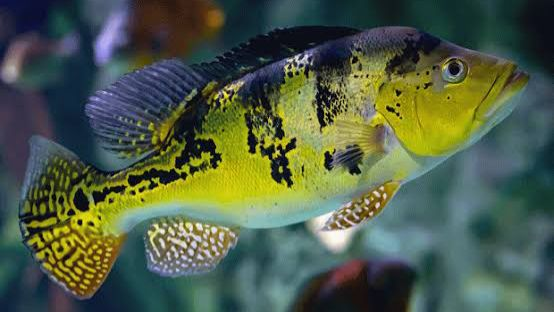
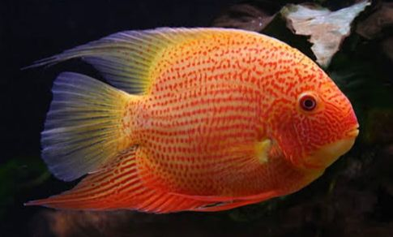
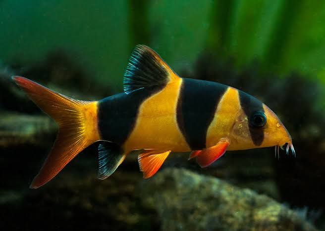

Description: The Jaguar Cichlid is a bold and aggressive freshwater fish known for its striking, jaguar-like spots and vibrant colors. It requires a large tank with plenty of space, hiding spots, and stable water conditions. Due to its territorial nature, it is best kept with other robust species.
pH: Ideal pH range is 6.5 to 7.5, with slightly acidic to neutral water.
Size: Can grow up to 14 inches (35 cm) in length.
Lifespan: Typically lives 10 to 15 years with proper care.
Aligator gar 6-7"
Price: Rs.850
Description: The Alligator Gar is a large, predatory fish known for its elongated body and alligator-like snout. It requires a very large tank with ample swimming space and secure water conditions. Due to its size and predatory nature, it is best kept in species-only tanks or with very robust tank mates.
pH:Ideal pH range is 6.5 to 7.5, with slightly acidic to neutral water.
Size: Can grow up to 10 feet (3 meters) in length.
Lifespan: Typically lives 35 to 50 years with proper care.
Buttekofferi 10"
Price : 850
Description: The Buttekofferi is a peaceful and hardy freshwater cichlid known for its beautiful coloration, with shades of blue and orange. It thrives in well-maintained aquariums with plenty of hiding spots and a stable environment.
pH: Ideal pH range is 6.5 to 7.5, with slightly acidic to neutral water.
Size: Can grow up to 6 to 8 inches (15 to 20 cm) in length
Lifespan: Typically lives 8 to 12 years with proper care.
Florida gar 14"
Price: Rs.2000
Description: The Florida Gar is a long, predatory fish known for its sleek body and sharp, elongated snout. It is an active swimmer that requires a large aquarium with plenty of swimming space and secure tank conditions.
pH: Ideal pH range is 6.5 to 7.5, with slightly acidic to neutral water.
Size: Can grow up to 36 inches (90 cm) in length.
Lifespan: Typically lives 10 to 20 years with proper care.
African lung fish 1.5 feet
Price: Rs.6500
Description: The African Lungfish is a unique, prehistoric fish known for its ability to breathe air and its eel-like body. It requires a large tank with low water levels and plenty of hiding spaces, as it is a solitary and slow-moving species.
pH: Ideal pH range is 6.5 to 7.5, with slightly acidic to neutral water.
Size: Can grow up to 6 feet (180 cm) in length.
Lifespan: Typically lives 15 to 20 years with proper care.
Tiger Oscar 10-11"
Price: Rs.1200
Description: The Tiger Oscar is a popular and aggressive freshwater fish known for its striking black and orange striped pattern. It requires a large tank with plenty of space, hiding spots, and stable water conditions. Due to its territorial nature, it thrives in tanks with few or no tank mates.
pH: Ideal pH range is 6.0 to 7.5, with slightly acidic to neutral water.
Size: Can grow up to 14 inches (35 cm) in length.
Lifespan: Typically lives 10 to 15 years with proper care.
Red snook splendida
Price: Rs.800
Description: The Redsnook Splendida is a striking and predatory freshwater fish known for its vibrant colors and sleek body. It requires a large, well-maintained aquarium with plenty of space to swim.
pH: Ideal pH range is 6.0 to 7.5, with slightly acidic to neutral water.
Size: Can grow up to 24 inches (60 cm) in length.
Copper oscar 10-11"
Price: Rs.1500
Description: The Copper Oscar is a beautiful and aggressive freshwater fish known for its copper-toned body and striking markings. It requires a large tank with ample space and hiding spots due to its territorial nature.
pH: Ideal pH range is 6.0 to 7.5, with slightly acidic to neutral water.
Size: Can grow up to 14 inches (35 cm) in length.
Lifespan: Typically lives 10 to 15 years with proper care.
Albino Tiger Oscar 10-11"
Price: Rs.1500
Description: The Albino Tiger Oscar is a striking freshwater fish with vibrant orange and white markings. Known for its intelligent and territorial nature, it requires a large tank with plenty of space and hiding spots. It is an aggressive species that thrives with careful tank management.
pH: Ideal pH range is 6.0 to 7.5, with slightly acidic to neutral water.
Size: Can grow up to 14 inches (35 cm) in length.
Lifespan: Typically lives 10 to 15 years with proper care.
Flame Red Oscar 10-11"
Price: Rs.1500
Description: The Flame Red Oscar is a vibrant freshwater fish with brilliant red-orange coloration and distinctive black markings. Known for its aggressive and territorial behavior, it requires a large tank with ample space and hiding spots. It is an intelligent and active species, often interacting with its environment.
pH: Ideal pH range is 6.0 to 7.5, with slightly acidic to neutral water.
Size: Can grow up to 14 inches (35 cm) in length.
Lifespan: Typically lives 10 to 15 years with proper care.
Yellow Flagtail 7-8"
Price: Rs.2000
Description: A vibrant freshwater species known for its striking yellow tail and elongated body. It is an active and peaceful fish that requires a spacious tank with plenty of swimming space.
pH: Ideal pH range is 6.5 to 7.5, with slightly acidic to neutral water.
Size: Can grow up to 10 inches (25 cm) in length.
Ornate senegal 3-4"
Price: Rs.1500
Description: The Ornate Bichir is a prehistoric-looking fish with an elongated body and armored scales. It is a nocturnal and peaceful species that requires a spacious tank with plenty of hiding places.
pH: Ideal pH range is 6.5 to 7.5, with slightly acidic to neutral water.
Size: Can grow up to 20 inches (50 cm) in length.
Peacock bass Azul 4-5"
Price: Rs.1000
Description: The Azul Peacock Bass is a vibrant and aggressive freshwater fish known for its striking blue and yellow coloration. It thrives in a spacious aquarium with clean, well-filtered water. The ideal pH range is 6.0 to 7.5, with slightly acidic to neutral water conditions for optimal health and growth.
Size: This fish can grow up to 24 inches (60 cm) in length.

Golden kelberi peacock bass 6"
Price: Rs.1000
Description: The Golden Kelberi Peacock Bass is a stunning freshwater fish with vibrant golden-yellow hues and distinctive black markings. Known for its active and aggressive nature, it requires a large, well-maintained aquarium. The ideal pH range is 6.0 to 7.5, with slightly acidic to neutral water for optimal health and vitality.
Size: It can grow up to 24 inches (60 cm) in length.
Albino Red bellied pacu 7"
Price: Rs.800
Description: The Albino Red-Bellied Pacu is a peaceful freshwater fish with a striking pale body and vibrant red belly. It requires a spacious, well-maintained aquarium due to its large size and active nature.
pH: Ideal pH range is 6.0 to 7.5, with slightly acidic to neutral water.
Size: Can grow up to 30 inches (76 cm) in length.
Milky White Veiltail Koi 10"
Price : Rs. 800
Description: The Milky White Koi Carp is a stunning, pure white koi with a glossy sheen and smooth, symmetrical fins. It grows up to 24-36 inches (60-90 cm) and can weigh up to 20 pounds (9 kg), with a lifespan of 20-30 years (or 40+ with excellent care). It thrives in water temperatures of 15-25°C, pH levels of 7.0-8.0, and requires a spacious, well-oxygenated pond at least 3 feet deep. Feed it a balanced diet of high-quality pellets, vegetables, and occasional protein treats for optimal growth and health.
Adult Cray Fish (Red) 5-6"
Price: 800
Description: The Crayfish is a freshwater crustacean with a lobster-like appearance, featuring a hard exoskeleton, two large claws, and a segmented body. It typically grows 3-6 inches (7-15 cm), though some species can reach 9 inches (23 cm), and has a lifespan of 2-5 years in captivity. Crayfish thrive in water temperatures of 18-25°C, pH levels of 6.5-8.0, and need a tank with hiding spots, clean water, and a secure lid (as they can climb). They are omnivores, feeding on algae, plants, pellets, and occasional protein sources like shrimp or fish.
Cray Fish (Blue) 3-4"
Price: 350
Description: The Crayfish is a freshwater crustacean with a lobster-like appearance, featuring a hard exoskeleton, two large claws, and a segmented body. It typically grows 3-6 inches (7-15 cm), though some species can reach 9 inches (23 cm), and has a lifespan of 2-5 years in captivity. Crayfish thrive in water temperatures of 18-25°C, pH levels of 6.5-8.0, and need a tank with hiding spots, clean water, and a secure lid (as they can climb). They are omnivores, feeding on algae, plants, pellets, and occasional protein sources like shrimp or fish.
Cray fish (White) 3-4"
Price: 350
Description: The Crayfish is a freshwater crustacean with a lobster-like appearance, featuring a hard exoskeleton, two large claws, and a segmented body. It typically grows 3-6 inches (7-15 cm), though some species can reach 9 inches (23 cm), and has a lifespan of 2-5 years in captivity. Crayfish thrive in water temperatures of 18-25°C, pH levels of 6.5-8.0, and need a tank with hiding spots, clean water, and a secure lid (as they can climb). They are omnivores, feeding on algae, plants, pellets, and occasional protein sources like shrimp or fish.
Cray fish (Orange) 3-4"
Price: 350
Description: The Crayfish is a freshwater crustacean with a lobster-like appearance, featuring a hard exoskeleton, two large claws, and a segmented body. It typically grows 3-6 inches (7-15 cm), though some species can reach 9 inches (23 cm), and has a lifespan of 2-5 years in captivity. Crayfish thrive in water temperatures of 18-25°C, pH levels of 6.5-8.0, and need a tank with hiding spots, clean water, and a secure lid (as they can climb). They are omnivores, feeding on algae, plants, pellets, and occasional protein sources like shrimp or fish.
Cray fish (Red and white) 3-4"
Price: 350
Description: The Crayfish is a freshwater crustacean with a lobster-like appearance, featuring a hard exoskeleton, two large claws, and a segmented body. It typically grows 3-6 inches (7-15 cm), though some species can reach 9 inches (23 cm), and has a lifespan of 2-5 years in captivity. Crayfish thrive in water temperatures of 18-25°C, pH levels of 6.5-8.0, and need a tank with hiding spots, clean water, and a secure lid (as they can climb). They are omnivores, feeding on algae, plants, pellets, and occasional protein sources like shrimp or fish.
Demanson's Cichlid 3-4
Price: Rs. 350 each
Description: African Cichlids are colorful, territorial fish native to African lakes like Lake Malawi. They thrive in stable, well-maintained tanks with slightly alkaline, hard water. Lifespan: 8 to 15 years.

Redspotted Severum 7"
Price: Rs. 1200 each
Description: The Redspotted Severum is a vibrant freshwater cichlid known for its bright green body and distinct red spots. Lifespan: 10 to 15 years. Ideal pH: 6.5 to 7.5.
Black Berry Dollar 3-4"
Price: Rs. 850 each
Description: A striking freshwater fish with deep black body and metallic, iridescent spots. Lifespan: 5 to 7 years. Ideal pH: 6.5 to 7.5.

Clown Loaches 4"
Price: Rs. 600 each
Description: Known for their orange and black stripes, Clown Loaches are lively and social. Lifespan: Up to 12 years. Ideal pH: 6.0 to 7.5.
Frontosa Burundi 2-3"
Price: Rs. 1500 each
Description: Known for its unique hump and striking appearance, the Frontosa Burundi thrives in large tanks. Lifespan: Up to 20 years. Ideal pH: 7.5 to 9.0.